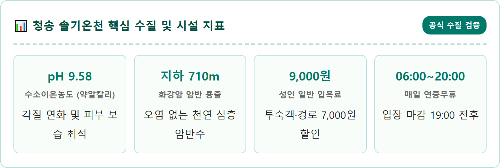
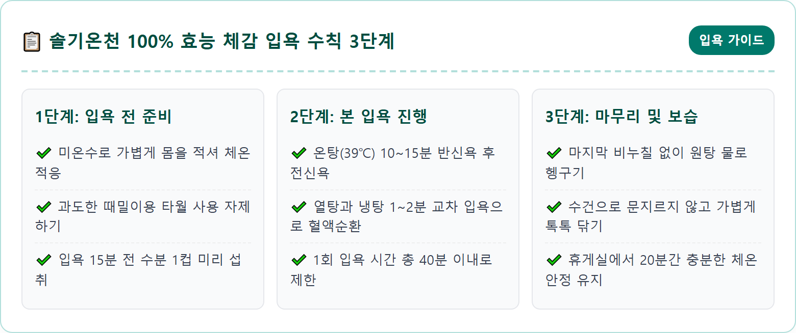
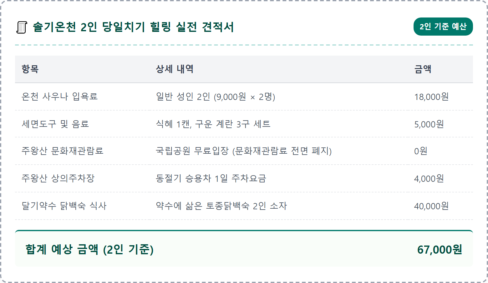
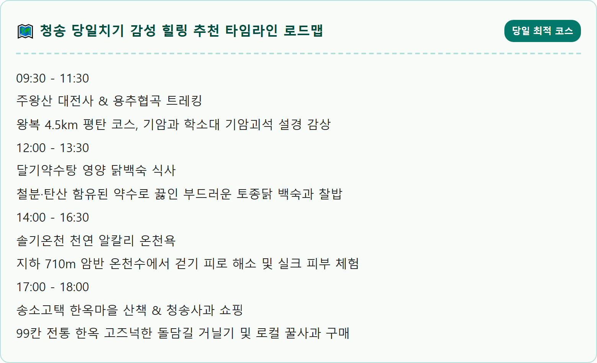
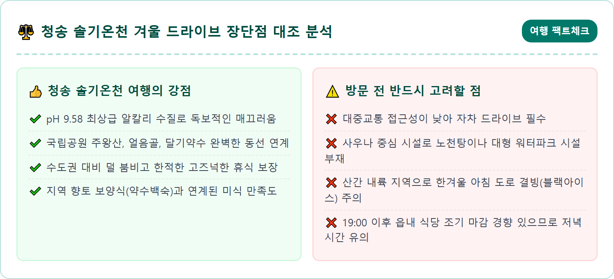
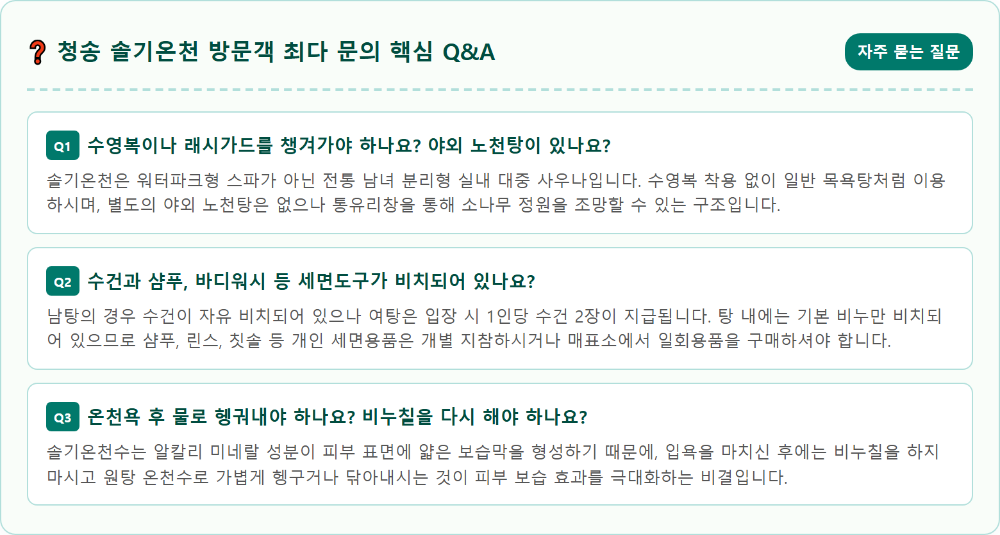

A breathtaking, photorealistic winter landscape photograph of Cheongsong, South Korea. In the foreground, hot thermal water gently flows over smooth natural stones with warm steam rising peacefully into the crisp winter morning air. In the background, the snow-covered rocky peaks of Juwangsan National Park rise majestically against a clear azure winter sky, surrounded by dense evergreen pine trees dusted with pristine white snow. Natural soft morning light, hyper-detailed textures of granite rocks and frost on pine needles, serene and healing atmosphere, ultra-high resolution, 8k quality, 1:1 aspect ratio.
경상북도 청송군은 유네스코 세계지질공원으로 등재될 만큼 태고의 자연경관과 독특한 지질학적 자산을 자랑하는 청정 지역입니다. 웅장한 기암괴석이 병풍처럼 둘러선 주왕산 자락에는 오래전부터 지역 주민들 사이에서 피부병과 신경통을 씻어내는 신비로운 샘물로 구전되어 온 온천수가 존재합니다. 솔기온천은 바로 이 청송의 울창한 소나무 숲과 화강암 지대 지하 깊은 곳에서 태동한 천연 온천입니다.
'솔기'라는 이름 자체가 소나무(松)의 맑은 기운(氣)을 뜻하는 순우리말에서 유래했을 정도로, 온천을 둘러싼 주변 환경은 피톤치드를 뿜어내는 노송 군락으로 가득 차 있습니다. 매서운 북풍이 불어오는 초겨울, 차가워진 공기를 마시며 따뜻한 탕 안으로 들어서면 은은한 솔향과 함께 온몸을 부드럽게 감싸는 특유의 온천수를 즉각적으로 체감할 수 있습니다.
일반적인 온천이 단순히 데운 지하수에 미네랄을 미량 함유한 수준에 그치는 경우가 많은 반면, 솔기온천은 지하 710m의 순수 화강암 암반층에서 하루 수천 톤씩 자연 용출되는 100% 원탕 공급 방식을 고집합니다. 물을 재사용하거나 정수 필터로 순환시키지 않고 깨끗한 직수를 흘려보내기 때문에 온천수 본연의 순도와 미네랄 활성도가 그대로 유지됩니다.

솔기온천의 탕에 첫 발을 들여놓는 방문객들이 하나같이 감탄하는 부분은 바로 물의 감촉입니다. 손으로 물을 떠 올리면 마치 최고급 실크 원단을 만지는 것처럼 혹은 맑은 에센스를 바른 것처럼 손끝이 미끌미끌하게 미끄러집니다. 일부 방문객들은 비누가 덜 씻긴 것이 아니냐고 오해하기도 하지만, 이는 물속에 풍부하게 녹아 있는 중탄산나트륨(NaHCO₃)과 알칼리 성분이 만들어내는 천연 피막 현상입니다.
공식 수질 분석 결과 솔기온천수는 수소이온농도 pH 9.58에 달하는 고순도 약알칼리성 온천수입니다. 이 약알칼리 성분은 피부 표면의 산성화된 노폐물과 묵은 각질을 자극 없이 부드럽게 녹여내어 비누칠을 강하게 하지 않아도 자연스러운 세정 효과를 발휘합니다. 동시에 다량 함유된 황산이온, 칼슘, 마그네슘 성분이 피부 장벽에 미세한 보습 보호막을 형성하여 입욕 후 로션을 바르지 않아도 살결이 오랫동안 당기지 않는 탁월한 보습력을 자랑합니다.
올바른 입욕 효과를 누리기 위해서는 탕에 들어가기 전 미온수로 가볍게 샤워를 한 뒤, 온탕(38~40℃)에서 10~15분간 서서히 땀을 내며 혈액순환을 촉진하는 것이 좋습니다. 이후 열탕과 냉탕을 가볍게 교차하며 혈관을 자극해주면 겨우내 굳어 있던 어깨 결림, 만성 근육통, 관절염 완화에 뛰어난 효과를 볼 수 있습니다. 입욕을 마친 후에는 수건으로 몸을 강하게 문지르지 말고 톡톡 두드리듯 물기를 말려 유효 미네랄 성분이 피부에 흡수되도록 하는 것이 핵심입니다.

솔기온천은 주왕산온천관광호텔 부속 시설로 운영되고 있어 대형 주차장과 깔끔한 위생 관리 상태를 유지하고 있습니다. 대중 사우나 시설은 지하 1층에 자리 잡고 있으며, 호텔 로비를 통해 에스컬레이터나 계단으로 편안하게 진입할 수 있습니다. 로비에 들어서면 넓은 통유리창 너머로 청송의 맑은 산세가 펼쳐져 입장 전부터 차분한 휴식의 분위기를 조성합니다.
2026년 동절기 기준 일반 대인 입욕 요금은 9,000원이며, 소인(미취학 아동)은 6,000원입니다. 청송 군민이거나 만 65세 이상 경로 우대 대상자, 혹은 주왕산온천관광호텔 투숙객의 경우 신분증이나 객실 키를 제시하면 7,000원의 할인 요금이 적용됩니다. 사우나 이용권 10매 또는 30매 묶음 할인권도 판매하고 있어 인근 영덕, 안동, 포항 등에서 주기적으로 원정 온천욕을 오는 단골 이용객들에게 인기가 높습니다.
운영 시간은 연중무휴로 매일 아침 06:00부터 저녁 20:00까지 운영되며, 입장 마감은 19:00입니다. 주말이나 공휴일의 경우 오전 10시부터 오후 2시 사이 등산객과 가족 단위 관광객이 집중되므로, 여유롭고 쾌적한 온천욕을 원하신다면 개장 직후인 오전 06:00~08:30 시간대나 늦은 오후인 16:30 이후에 방문하시는 것을 적극 추천합니다. 주차장은 호텔 전면에 150대 이상 주차 가능한 무료 전용 주차장이 마련되어 있어 주차 걱정 없이 편리하게 이용할 수 있습니다.

온천욕으로 몸을 풀기 전이나 온천 후 가벼운 산책을 즐기기에 가장 완벽한 연계 명소는 바로 주왕산 국립공원입니다. 솔기온천에서 차량으로 불과 15분 거리에 위치한 주왕산은 사계절 내내 아름다운 풍광을 뽐내지만, 늦가을 단풍잎이 떨어지고 하얀 눈이 덮이기 시작하는 초겨울에는 한층 더 장엄하고 신비로운 자태를 드러냅니다.
많은 분들이 주왕산을 험준한 암벽 등산로로 오해하곤 하지만, 대표 진입로인 대전사에서부터 용추폭포(제1폭포)까지 이어지는 '주왕계곡 트레킹 코스'는 경사도가 거의 없는 평탄한 무장애 데크길로 조성되어 있습니다. 남녀노소 누구나 일반 운동화나 가벼운 트레킹화만 신고도 편안하게 왕복 2시간 내외로 걸을 수 있어 가족 여행객들에게 최적의 힐링 산책로로 손꼽힙니다.
고즈넉한 대전사 마당에 서면 사찰 지붕 위로 우뚝 솟은 거대한 암봉인 '기암(旗岩)'이 웅장한 위용으로 방문객을 압도합니다. 사찰을 지나 계곡을 따라 걷다 보면 거대한 바위 절벽이 하늘을 가릴 듯 마주 서 있는 '용추협곡(급수대, 학소대)'에 다다르게 됩니다. 양옆으로 솟아오른 깎아지른 수직 암벽 사이로 난 좁은 석문을 통과할 때 바위틈 사이로 흘러내리는 맑은 물소리와 찬 서리를 머금은 겨울바람은 복잡한 일상의 번뇌를 순식간에 씻어내 줍니다.

청송의 겨울을 이야기할 때 결코 빼놓을 수 없는 또 하나의 독보적인 볼거리는 바로 부동면 내룡리에 위치한 '청송 얼음골'입니다. 여름철 삼복더위에도 얼음이 얼고 시원한 찬바람이 뿜어져 나오는 지형적 미스터리로 유명한 이곳은, 기온이 영하로 떨어지는 12월부터 거대한 천연 인공 빙벽이 수십 미터 높이로 얼어붙으며 압도적인 겨울 왕국으로 변신합니다.
절벽을 따라 수직으로 쏟아지는 물줄기가 매서운 영하의 칼바람과 만나면서 거대한 얼음기둥과 고드름 폭포를 형성하는데, 그 웅장한 스케일과 푸른빛을 머금은 빙벽의 색감은 마치 알프스 설산의 빙하를 마주한 듯한 착각을 불러일으킵니다. 이곳은 매년 전국 아이스클라이밍 선수권 대회가 개최되는 공식 경기장이기도 하여, 주말이면 빙벽을 타고 오르는 전문 산악인들의 역동적인 모습도 직접 관람할 수 있습니다.
얼음골 빙벽 앞에는 넓은 나무 관람 데크와 포토존이 조성되어 있어 안전하게 기념사진을 남길 수 있습니다. 다만 빙벽 주변은 협곡 지형 특성상 기온이 청송 읍내보다 3~5℃가량 더 낮고 바람이 강하게 불기 때문에, 두꺼운 롱패딩과 방한 모자, 장갑 등 보온 장구를 철저히 갖추고 방문해야 합니다. 거대한 얼음 예술작품을 배경으로 인생 사진을 남긴 뒤 인근 간이 매점에서 따끈한 어묵 국물 한 모금을 마시는 순간은 겨울 여행만의 잊지 못할 추억을 선사합니다.

청송 여행에서 온천욕만큼이나 몸속 깊은 곳까지 원기를 불어넣어 주는 필수 미식 코스는 바로 '달기약수터 닭백숙'입니다. 솔기온천에서 차량으로 10분 거리인 청송읍 부곡리에 위치한 달기약수터는 조선 철종 때 발견된 유서 깊은 탄산 약수터로, 바위틈에서 솟아나는 약수에는 철분과 탄산, 마그네슘 등 다양한 광물질이 고농도로 함유되어 있습니다.
바가지로 달기약수를 떠서 한 모금 마시면 혀끝을 톡 쏘는 탄산의 짜릿함과 함께 쇠 맛(철분 맛)이 느껴지는데, 이 약수로 밥을 짓거나 닭을 삶으면 마법 같은 조리 과학이 일어납니다. 약수에 함유된 탄산과 산성 성분이 닭고기의 단백질과 지방질을 부드럽게 분해하여 질긴 토종닭의 육질을 거짓말처럼 야들야들하게 만들어주고, 특유의 잡내를 완벽하게 잡아줍니다.
백숙을 주문하면 인삼, 황기, 엄나무, 대추 등 한약재와 함께 푹 고아낸 백숙 한 마리와 녹두를 듬뿍 넣고 지은 찰진 녹두 닭죽이 푸짐하게 차려집니다. 닭백숙 국물은 연한 푸른빛과 짙은 갈색이 어우러져 깊은 감칠맛을 내며, 국물 한 방울까지 들이켜면 온몸에 따뜻한 열기가 퍼지며 겨울철 면역력을 든든하게 채워줍니다. 함께 나오는 닭가슴살 떡갈비 구이와 매콤달콤한 닭날개 구이도 별미로 곁들이기 좋습니다.
몸과 배를 든든하게 채웠다면 청송의 깊은 역사와 품격을 간직한 '송소고택(덕천마을)'으로 향해 고즈넉한 한옥 산책을 즐겨보시기 바랍니다. 조선 시대 영남의 대부호였던 청송 심씨 심호택이 1880년에 건립한 송소고택은 궁궐을 제외하고 민가로서 지을 수 있었던 최대 규모인 99칸(현재 7동 구조)을 온전히 보존하고 있는 국가민속문화재입니다.
마을 입구에 들어서면 흙과 돌을 켜켜이 쌓아 올린 나지막한 토석 담장이 길게 이어지고, 담장 너머로 솟을대문과 웅장한 기와지붕의 곡선미가 시선을 사로잡습니다. 대문을 지나 안채와 사랑채, 별채로 이어지는 미로 같은 동선을 따라 걷다 보면 안채를 드나드는 여성들의 프라이버시를 보호하기 위해 쌓아 올린 독특한 '헛담' 등 조선 후기 사대부 가옥의 지혜로운 공간 분할을 엿볼 수 있습니다.
겨울 오후의 따스한 햇살이 내려앉은 고택 마루에 잠시 걸터앉으면, 처마 밑으로 스쳐 지나가는 바람 소리와 바삭거리는 낙엽 소리만이 고요한 적막을 채웁니다. 고택 주변에는 전통 찻집과 한옥 북카페가 운영되고 있어 은은한 대추차나 국화차 한 잔을 곁들이며 바쁜 일상에서 벗어난 진정한 쉼을 만끽하기에 더할 나위 없이 훌륭합니다.
청송은 동해안의 영덕, 내륙의 안동과 도로망이 잘 연결되어 있어 단독 일정은 물론 주변 도시와 연계한 드라이브 코스를 짜기에 매우 유리합니다. 당일치기 일정이라면 오전 9시경 청송에 도착하여 주왕산 용추협곡 트레킹으로 신선한 공기를 마신 뒤, 달기약수터에서 든든한 닭백숙으로 점심 식사를 즐기고, 오후 2시경 솔기온천에서 2~3시간 동안 여유로운 온천욕을 즐긴 후 송소고택을 들러 귀가하는 코스가 가장 정석적입니다.
1박 2일 일정을 계획하신다면 첫날 주왕산 트레킹과 솔기온천욕을 마친 뒤 주왕산온천관광호텔이나 송소고택 한옥 스테이에서 하룻밤을 묵으며 밤하늘의 쏟아지는 별빛을 감상하는 것을 추천합니다. 둘째 날 아침에는 상쾌한 기분으로 얼음골 빙벽을 둘러보고, 31번 국도를 따라 영덕 강구항으로 넘어가 제철 맞은 대게와 싱싱한 동해안 회를 맛보는 2시간 해안 드라이브 연계 코스가 환상적인 궁합을 자랑합니다.
겨울철 청송을 주행할 때는 31번 국도와 주왕산 진입로 등 산악 커브 구간에서 아침저녁으로 노면 온도가 급격히 떨어져 발생하는 블랙아이스(살얼음)를 각별히 주의해야 합니다. 응달진 산모퉁이나 다리 위 구간에서는 급가속과 급제동을 피하고 충분한 안전거리를 유지하며 서행 운전하는 방어 운전 습관이 필수적입니다.

모든 온천욕과 관광 일정을 마치고 돌아가는 길, 청송 여행의 달콤한 여운을 집까지 이어가기 위해서는 지역 농특산물 직판장을 방문하는 것을 잊지 말아야 합니다. 청송은 해발 250m 이상의 산간 고지대로 일교차가 크고 일조량이 풍부하여 전국에서 가장 높은 당도와 아삭한 식감을 자랑하는 '청송 꿀사과'의 본고장입니다.
늦가을부터 수확되어 초겨울에 맛이 절정에 달하는 부사(후지) 사과는 과육 속에 꿀(밀)이 가득 차 있어 한 입 베어 무는 순간 상큼한 과즙과 폭발적인 달콤함이 입안을 가득 채웁니다. 국도변 농가 직판장이나 로컬푸드 마켓에서는 갓 수확한 사과를 시식해보고 합리적인 산지 가격으로 선물용 박스나 실속형 가정용 사과를 구매할 수 있습니다. 100% 사과 원액으로 착즙한 사과즙 파우치도 아이들 간식이나 건강 음료로 훌륭한 선택입니다.
또한 달기약수터 인근 전통 상점가에서 판매하는 '달기약수엿'은 탄산 약수와 쌀, 엿기름만을 이용해 전통 방식으로 고아낸 건강 간식입니다. 치아에 들러붙지 않고 고소하면서도 은은한 단맛이 일품으로, 어르신 선물용이나 귀갓길 차 안에서 졸음을 쫓는 간식으로 인기가 높습니다. 맑은 소나무 숲의 온천수와 장엄한 설경, 그리고 달콤한 사과 향기가 어우러진 청송에서의 하루는 추운 겨울을 건강하게 이겨낼 최고의 힐링 선물이 될 것입니다.
| 구분 | 주요 내용 | 이용 꿀팁 및 안내 |
|---|---|---|
| 위치 주소 | 경북 청송군 청송읍 중앙로 315 (주왕산온천관광호텔) | 내비게이션: 솔기온천 또는 주왕산온천관광호텔 |
| 이용 요금 | 대인 9,000원 / 소인 6,000원 | 투숙객·경로·군민 7,000원 할인 적용 |
| 영업 시간 | 06:00 ~ 20:00 (입장 마감 19:00) | 연중무휴 매일 운영 / 주말 오전 혼잡 |
| 주차 시설 | 호텔 전면 지상 대형 전용 주차장 완비 | 150대 수용 가능 / 전액 무료 주차 |
| 수질 특성 | 지하 710m 화강암층 pH 9.58 천연 알칼리수 | 비단결 보습감, 신경통·아토피·각질 개선 |
| 연계 코스 | 주왕산 용추협곡(15분), 달기약수탕(10분) | 송소고택(15분), 얼음골 빙벽(25분) |